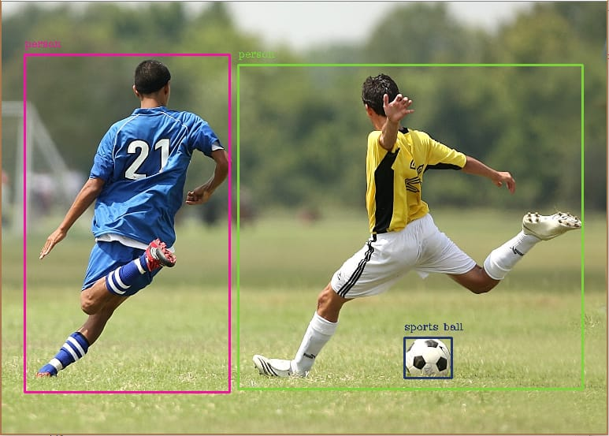

YOLO Object detection (Internship project at BITS pilani 2019)
Implemented an algorithm using a convolution neural network (CNN), for doing object detection in real. The algorithm applies a single neural network to the full images and then divides the image into regions and predicts bounding boxes and probabilities for each region.